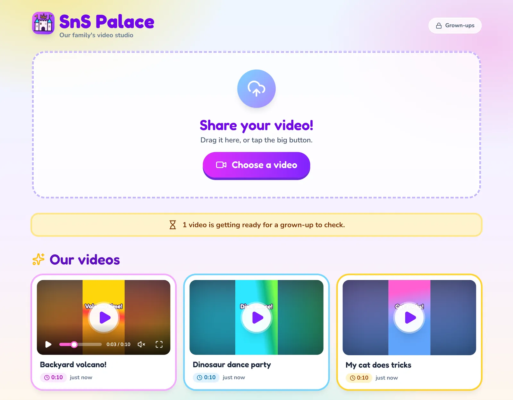
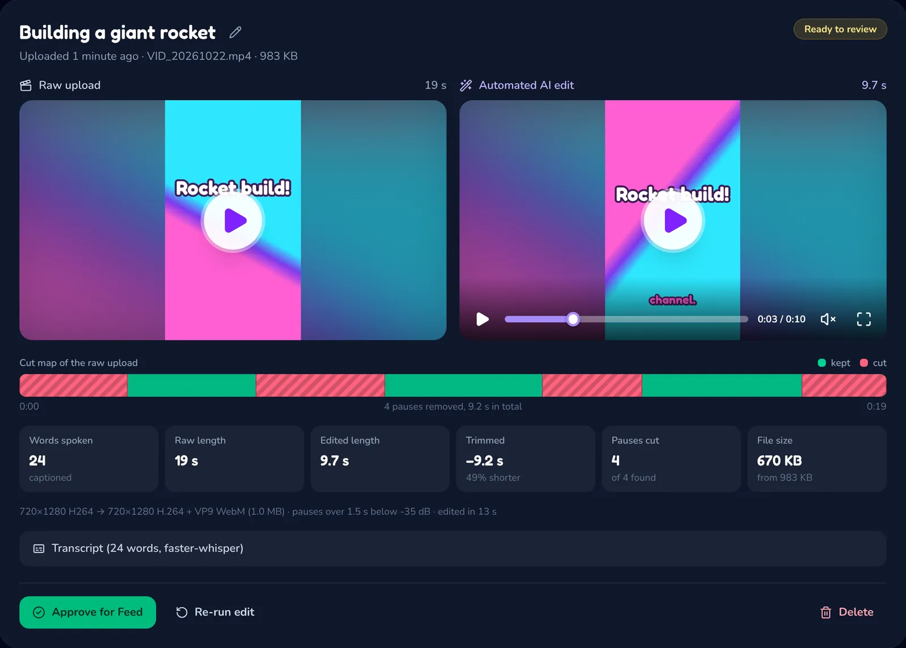
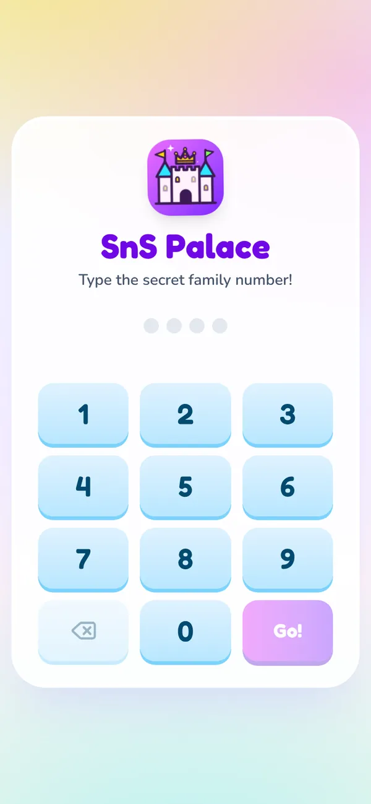
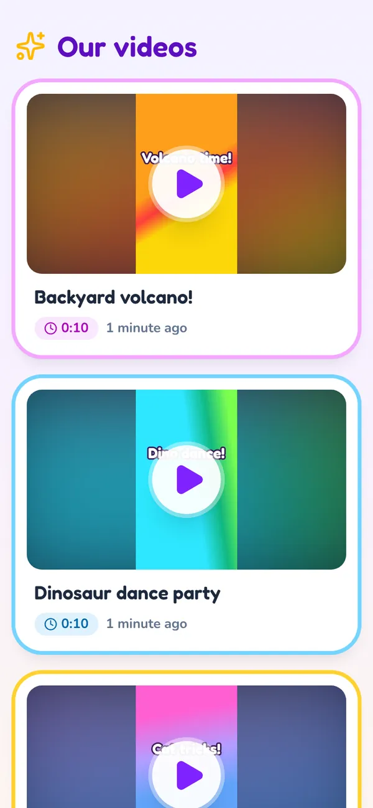

SnS Palace
Our family's own video studio. Kids share their videos, an automatic editor trims the long pauses and adds big colourful captions, and a grown-up approves every video before it reaches the family feed. No YouTube, no strangers, no ads.
This page tells you about SnS Palace. The app itself runs on your own computer, so only your household can open it, and every device needs the family PIN.
How it works
Three steps, and nothing reaches the feed without a grown-up's OK.
Kids share a video
They type the family PIN, drag a video in (or tap the big button), give it a name and hit Send it!
It edits itself
Pauses longer than 1.5 seconds are trimmed, words are written on screen karaoke-style, and the video is shrunk for quick playback.
A grown-up approves
In the parent room you see the raw video next to the edit, with what was cut, and choose Approve for Feed or Delete.
Take a look




What's inside
Built to keep kids' videos inside the family.
Two PINs
A family PIN opens the app; a separate grown-up PIN opens the parent room, which locks itself again after 30 minutes.
Smart trimming
Long pauses are cut, but never through a word, even a whisper, and a quiet video is never trimmed to nothing.
Kid-sized captions
Big, bold, rainbow captions in the lower third, with each word lighting up as it is spoken.
Private storage
Videos live in your own Supabase and Cloudinary accounts as private files, or entirely on your computer in offline mode.
No location data
Phones hide GPS coordinates inside videos. Every edit, preview and thumbnail is saved without them.
Speech stays home
Captions can come from Whisper running on your own computer, so the audio never leaves the house.
Run it at home
SnS Palace runs on a computer in your house (or a small home server). Every phone and tablet on your Wi-Fi can then open it.
You need
- Node.js 22.13 or newer
- ffmpeg (
brew install ffmpegorsudo apt install ffmpeg) - Optional: Python 3 for on-computer captions
- Optional: free Supabase and Cloudinary accounts (or use offline mode)
Once it's running, open the parent room and press Add a device: it shows a QR code that opens SnS Palace on a kid's tablet in one scan. Then use Add to Home Screen and it opens like an app, with the castle icon.
# get the code and install git clone https://github.com/Kevdogg05/kevdogg05.github.io.git cd kevdogg05.github.io/sns-palace npm install # set the PINs (see the comments in the file) cp .env.local.example .env.local # start the app and the video editor npm run dev:all
Full setup, including Supabase and Cloudinary: the SnS Palace README.
Use it away from home
Free: leave a computer on at home and add Tailscale (free for personal use). SnS Palace gets its own private https:// address, and every phone and tablet with the Tailscale app can post and watch from anywhere, on any Wi-Fi or mobile data. No computer to leave on? Host it online instead, from about $5 a month. How to set it up.